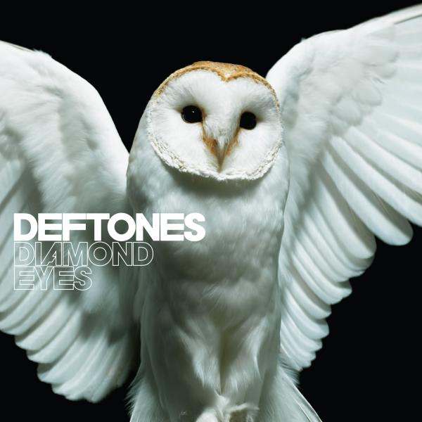
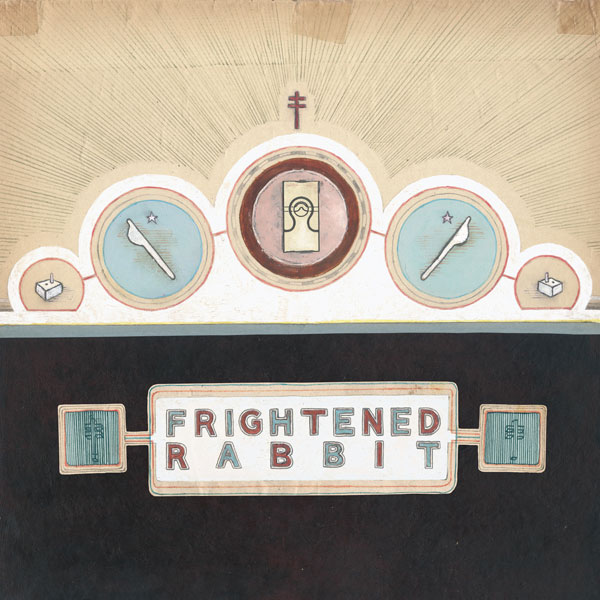
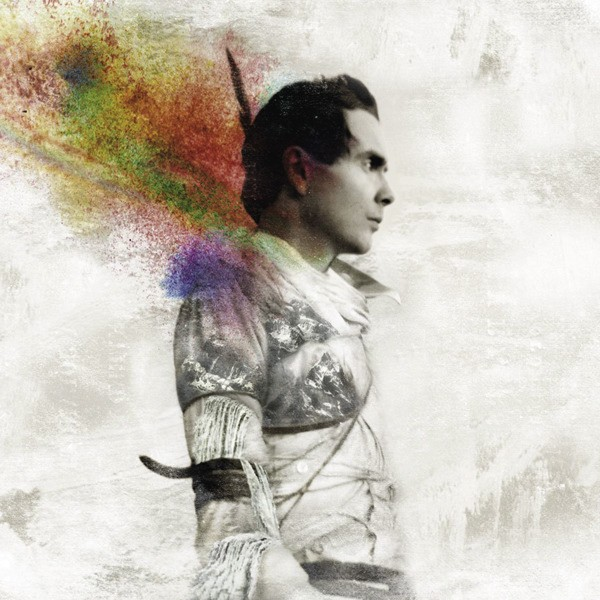
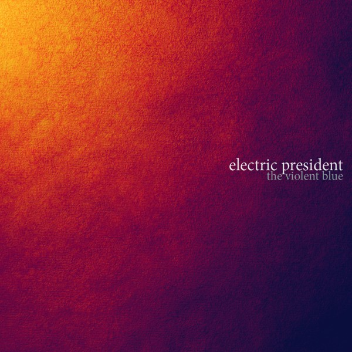
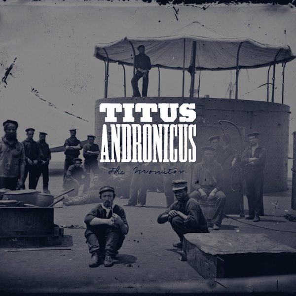
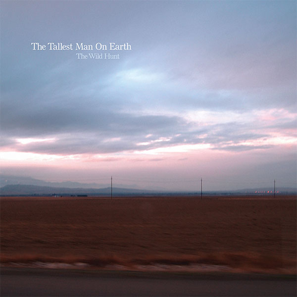
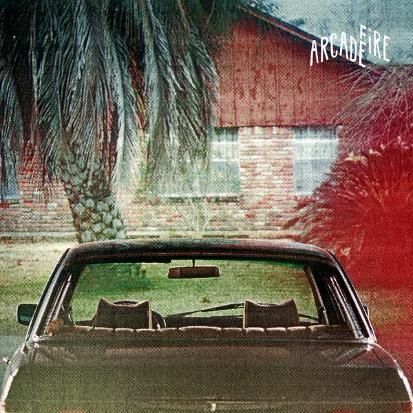
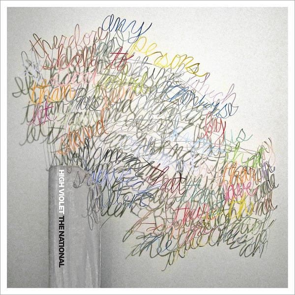
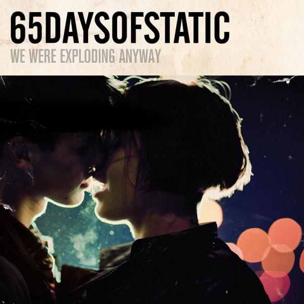
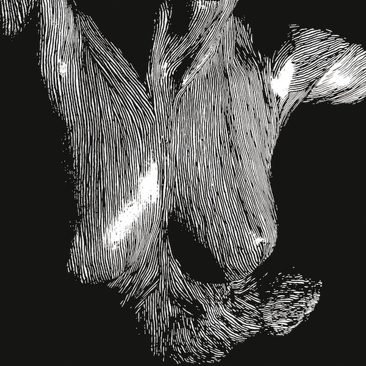

Albums of 2010
10
In the shadow of Deftone's bassist Chi Cheng tragically falling into a coma following a car accident in November 2008, the band decided against completing the album they were currently writing in favour of writing new material, the result of which is Diamond Eyes. The distinctive Deftones aggression and atmosphere is still here after all these years, and the band certainly haven't lost their ability to write and produce deeply textured, brooding, emotional songs. Whilst it's not quite up to White Pony standard, Diamond Eyes is a great album, particularly impressive for a band who have been around since 1989 and who have managed to be victorious over tragedy.

9
Frightened Rabbit
The Winter of Mixed Drinks
Frightened Rabbit's previous album The Midnight Organ Fight was written out of a painfully obvious difficult period of lead singer Scott Hutchinson's life and provided concrete proof of the band's ability to write brilliant songs, cementing itself as one of the finest albums of recent times (and my own personal favourite of 2008). Naturally, following up such a powerful album was never going to be an easy task. This time, the band opted to take a much more detailed and layered approach to recording and producing the album, which is all too apparent from the moment opening track Things kicks in. Thematically, the album for the greater part still deals with unpleasant, dark thoughts, although Scott admits that this time the stories of the songs are semi-fictional, since he was more "solid and content" with his life this time around. The album falls short of reaching the greatness and consistency of Midnight Organ Fight, but still exhibits accomplished song-writing and a sonically pleasing listening experience.

8
Sigur Rós frontman Jónsi's solo album Go admittedly didn't grab me at first. There were some notable stand-out tracks, such as Go Do, Boy Lilikoi, and Around Us, but ultimately it just didn't win my dedicated listening time like some other albums did around the same time. Later in the year, I heard Jónsi would be releasing a live CD/DVD version of Go. Given that Heima, a documentary released by Sigur Rós, is one of my favourite films of all time, I thought I would buy Go Live in the hope that it could display similar magic. I'm happy to admit that I was wrong about my initial opinion of Go. Go Live, even just on the CD alone, quickly made me realise just how special Jónsi's music really is. I've seen Sigur Rós live before on a couple of occasions, and each time it was magical in it's own way. I hope to see Jónsi live some day soon, as I have no doubt the experience will be just as enchanting.

7
Electric President
The Violent Blue
If you've been watching TV within the last few months at all, the chances are you've heard Radical Face's excellent Welcome Home provide the soundtrack to a Nikon advert. Radical Face's Ben Cooper also records music with Alex Kane under the title of Electric President, and The Violent Blue is the third full length album from the pair. Most of Electric President's music is mellow in tone, and it's fair to say that on first listen the album may not stand out, but give it a few more listens and the album reveals unique song writing, delicate production and beautiful, soulful melodies.

6
Titus Andronicus
The Monitor
New Jersey punk rockers Titus Andronicus' sophomore effort The Monitor is a concept album relating to the American Civil War. With this album, much like the last, the band's sound epitomises what I would call good drinking music - raw, loud, and one hell of a rowdy ruckus. The album echoes New Jersey influences such as Bruce Springsteen ("Tramps like us, baby, we were born to die" seems an obvious reference to Springsteen's Born to Run) and the sound of Richard II harks back to The Gaslight Anthem's earlier albums. I can imagine boisterous sing-a-longs to most of the tracks on the album, and I really do hope to check these guys out live some day soon. I raise a whiskey to ye, lads!

5
The Tallest Man on Earth
The Wild Hunt
Swedish singer-songwriter Kristan Matsson, aka The Tallest Man on Earth (who is actually quite small), is a rare talent - an incredibly talented and beautiful song-writer and a masterful musician with a unique and dazzling command over his guitar. His songs conjure images of beautiful unspoiled countrysides changing throughout the seasons, aided by the raw and natural production of his recordings. I had the pleasure of seeing Kristan live in Belfast in November of 2010 and it was an absolute treat. An EP entitled Sometimes the Blues is Just a Passing Bird was also released in 2010, which offered more excellent down-tempo offerings. I have yet to hear this guy do wrong.

4
Arcade Fire need no introduction (or do they?). Perhaps strangely, The Suburbs was the first album from Arcade Fire that I really got into in a big way. Sure, Funeral and Neon Bible both had their highlights, but The Suburbs, for me, stood together as an album much more solidly than the previous two. Tracks like The Suburbs, Ready to Start, We Used to Wait and Suburban War provide the distinct and familiar Arcade Fire sound, while Half Light II and Sprawl II display a more dancey side of the band, reminiscent in parts of Blondie or Depeche Mode. Empty Room is another highlight of the album, a fast-paced piece with a frantic violin track and a reverby distorted guitar reminiscent of My Bloody Valentine. The album comes in at a whopping 16 tracks, and while it does contain one or two lulling moments which perhaps it could have done without, it's a great album that proves yet again that Arcade Fire are one of the best, most consistent bands out there.

3
The National first won my heart with the album Boxer. It was a tough act to follow, but to say they delivered with follow-up High Violet would be an understatement. Despite being placed number 3 in my list, this album has all the marking of becoming a classic in years to come. Every song on the album is brilliantly performed and produced. Frontman Matt Berninger's lyrics are unique and quirky, yet dark and soulful. While most of the songs on the album are slow and moody rather than balls out rock, they delicately build and climax in an authentic and meaningful manner which doesn't feel at all contrived or formulaic. High Violet feels like The National's magnum opus, and is one hell of an achievement.

2
65daysofstatic
We Were Exploding Anyway
We Were Exploding Anyway is the fourth full-length studio album from 65daysofstatic and marks quite a change in style, particularly in comparison to the previous 2007 album, The Destruction of Small Ideas, an album firmly within the 'post-rock' tag. This album sees the band mostly getting away from post-rock and delving deeper into the electronic dance genre. Tracks like Crash Tactics, Go Complex and Weak4 find the band producing hectic breakbeat synth-driven tracks which could be compared to The Prodigy, whilst Piano Fights harks back to the band's earlier post-rock sounding days. The album really climaxes at the end - penultimate track Debutante's haunting melody and euphoric atmosphere wouldn't be out of place in a futuristic sci-fi film soundtrack. Closer Tiger Girl (featured below) is without a doubt one of my favourite tracks of the year, a 10 minute dance track akin to the likes of Orbital and Fuck Buttons, which can honestly only be described, without hyperbole, as 'epic' (particularly live). I've got goosebumps right now.

1
Oceansize
Self Preserved While The Bodies Float Up
Predictable choice? For anyone who knows me, then yes, probably, but for most others, Oceansize are something of an enigma. Formed in Manchester in 1998, Oceansize have produced (in my opinion, of course) some incredible albums and yet fail to get recognition with the majority of the music scene - why this is, I'm not quite sure. Self Preserved... is the band's fourth full-length album, and showcases a broad range of the band's musical spectrum - the sludge metal of opener Part Cardiac (which no doubt would set first time listeners off on the wrong trail as to what the rest of the album held in store), the chaotic rock of Build Us A Rock Then, the brooding and atmospheric Oscar Acceptance Speech, and the delicate dreamy ballad of Pine. The album starts out heavy, with the first three tracks smacking you right in the face, before album highlight (and one of my favourite tracks of the year) Oscar Acceptance Speech (featured below) pulls the pace back a little. Following a lengthy strings outro of said track, the album moves into more sombre territory, with Ransoms and A Penny's Weight providing moody and dreamy soundscapes, drawing comparisons to the likes of Radiohead and Mew. Silent/Transparent brings us back to a medium-paced affair, an 8 minute track which builds into something rather euphoric and special towards the end before immediately cutting to the intro noodlings of It's My Tail and I'll Chase It If I Want To, a track which seems intent on melting your face off (featuring Biffy Clyro frontman Simon Neil). Once your face has been successfully melted, Pine returns us to the dreamy soundscape, lulling us into a lovingly warm and fuzzy retreat before closer Superimposter snatches us away with something a little bit more sinister. Oceansize are, to me, one of the most underrated bands in the world, which this album only continues to exemplify.
